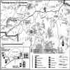

By Neil Monteith and Lee Cujes, November 1999
Last updated 8 November, 2007

| Girraween Climbing Guide |
By Neil Monteith and Lee Cujes, November 1999 Last updated 8 November, 2007 |
|
|
|
Most of this overview was written by Neil Monteith. The book "Discover Australia - National Parks (Ed. R & V Moon)" also has some good general information. Much of the specific route information on this page comes from the mid '80s Scott Camps guidesheets.
|
INTRODUCTION Girraween National Park is a large area containing many fine examples of granite slab and face climbing. With little natural protection and some big runouts many of it's route require an almost free solo approach. Don't be discouraged though, there are plenty of good routes with ample protection squeezed in between the blank walls. A basic rack and a handful of hangers will suffice on most routes (and maybe some Detol to clean that nasty granite gravel rash!). Remember - being allowed to climb at Girraween is a privilege. QNPWS could shut climbing down at any time, so please be extra careful.
ACCESS |
 |
|
Above: Map of Girraween |
CAMPING
Two campsites exist each with amenities; toilets, hot showers, laundry tub and running water. The Park Service suggests that campers book in beforehand especially if it is a long weekend or school holidays. The information centre is open 2-4pm week days and earlier on weekends.
For further information...
| The Ranger Girraween National Park Wyberba via BALLANDEAN QLD 4382 (07) 4684 5157 Fax (07) 4684 5123 Department of Environment |
South-western Regional Office 158 Hume Street PO Box 731 TOOWOOMBA QLD 4350 (07) 4639 4599 Fax (07) 4639 4524 |
WHEN TO GO
The best months for climbing are between the months of February to April and September to November as the other months are either extremely hot or intensively cold and windy. Winter is not a good time to climb - it has snowed in the past.
GUIDEBOOK
Click here for PDF guidesheet. Note that this only contains a selection of available routes. There are many more out there. Contacting locals, or exploring is the order of the day.
THE CLIMBING
The climbing is on a coarse granite (Stanthorpe Adamalite). Most of the climbing areas are above well used bushwalking tracks. Take care of walkers and tread lightly. This area has had access problems in the past and underlying 'ban climbing' tensions are still around. Do not place new bolts on the Pyramids, Castle Rock, Sphinx Rock, Turtle Rock and Mt Norman. All these areas are viewed by the general public many times a day. Climbing is banned altogether on the First Pyramid. Stay off climbs here at ALL times.
THE CLIMBING AREAS
There are over ten separate areas within the park where climbing is possible and well established. To find the easiest ways to these areas get a map from the Rangers office. All these areas have well maintained walking tracks to them.
First Pyramid
Climbing is banned. From the picnic area, take the Pyramid Track (25 min) which is signposted. A route once climbed the tourist feature 'Balancing Rock' but its bolts have now been removed. An
interesting hueco-filled mini bouldering cave is located on the side facing the second Pyramid. This is a good place to hang if its raining!
Second Pyramid
Access as per the First Pyramid. This is a serious area and is not
recommended for Girra first-timer's! Most routes are long, single pitch slab routes which are mostly located on the western and southern walls. The classic leftwards rising sickle-shaped crack is Scimitar (21). It is usually done in two pitches with a hanging belay. Right and left of this are several hard bolted slab routes with big runouts - beware! About 50m right of Scimitar is an obvious slab with a thin seam which turns into a small corner system up higher. This is Rourke's Rift (14), a multi pitch classic. The first ascentionists did this without sticky rubber and cams. The unattractive wide corner another 100m right is Upside Down Bullfrog (16). There are a couple of ways of descent off the top. One way is soloing down the side facing the First Pyramid. A safer way is down a gully on the opposite side (requires some rapping).
*** Scimitar 70m 21
A soaring and beautiful looking curved crack. Described as one of the best routes in the State. The start is unmistakable - the immodest, arching crackline.
(1) (21). The line spears leftwards up to a semi-detached flake.
(2) (18). Glide leftwards again on excellent stone. Before the crack expires, head straight up to the top.
FFA: Tobin Sorenson, John Allen 1979.
*** Roarke's Rift 55m 14
A great classic! The definite shallow corner/flake system around right from Scimitar. I would say it's closer to 75m if starting from ground level.
(1) (crux). Up slab, into corner, which is followed to a small ledge.
(2). Up, then left a few metres into grass, up flakes to finish. [Note: a better way to do the second pitch is to follow the corner system all the way to the top]
FFA: Richard Sullivan, Rob Staszewski 4/73.
Castle Rock Camping area
No classics here. From the camping ground, follow the old Castle Rock track for about 100m, then follow a vague track to the left for approx. 400m up the hill and under the huge main boulder. Continue left to walk through a narrow causeway - in a large cleft on the back side of this hill are three bolted routes around grade 20. Descent chains exist on the summits of the boulders. Sciamachy 12m (19) will be found on the right wall and Talking Tops, a 15m
21, is on the left wall.
Track Routes
There are a number of crack routes to be found along the tourist track between the Castle Rock camping area and Turtle Rock which supposedly have been climbed by Rob Staszewski in the early 1980's. No accurate information is available.
Castle Rock
Only a handful of routes here but most are well protected. Most of the routes are located on a beautiful orange streaked slab on the eastern side. When the walking track first hits the rock of Castle Rock skirt around right for a couple of hundred metres to the first routes. Approximate distance from the Castle Rock camping area is 2.6km (25min). The obvious orange easy angled slab with one bolt is Imagine (13). Left of this is an easy 15, Dribbly Drop. The next orange steak right of Imagine is the superb That Gigantic Pygmy Possum Fossil (19) with four bolts. Right of this is a bolted overhung
arête German Quality (24) and right again is an evil overhung thin corner crack by Geoff Weigand called The Bat (24).
** German Quality 55m 24
Excellent. The first hard wall route at Girraween. When the tourist track meets the rock itself, break off right and follow a vague track through the open bush for about 80m until the first orange streak is found. Now walk 30m right to the third orange streak. Now continue 10m down the slab from the third streak to the base of a large boulder. Finger traverse out right under bulge and up to bolt. Continue right and swing up to scoop. Balance back left and onto twin jugs. Bolt. Continue up wall and carefully to top.
FFA: Jörg Wilz & Stuart Camps 7/84.
|
Sphinx Rock |
 |
|
Above: Sphinx Rock |
The first block you hit has two good routes. The slabby north face is Winter Daydreams (15 M1), a route which has a ridiculously hard aid move off a bolt and hooks to gain the easier slab. Around left from this is a beautiful
arête, Space And Energy (24), a sustained classic with three bolts.
Behind Space and Energy is a narrow ravine which has nine routes. The two best climbs on the eastern side are Snow White (15), the obvious vertical route with heaps of chicken heads and Vagabond (21), the rightwards rising route on thin crimpers with a juggy finish. Opposite these on Sphinx Proper are a number of ridiculously undergraded Scott Camps routes. The right most is Burnt Logs (24 - yeh right), then Around
The World (22 - I don't think so!) and finally on the overhung wall 40m left is Vakula
The Smith (24 - I'm sceptical...)
On the other side of the block from which Snow White climbs are two classic face routes with okay grades. The left side is the three star classic
arête Alex in Wonderland (23) and right of this is the great face route The Queen of Spades (22) (see photo above). Both are well bolt protected.
*** Alex in Wonderland 15m 23
A superb climb up an extremely sharp arête. Starts 3m right of the obvious chimney on the eastern side of the boulder. Jug across flake to a bolt. Then up past two more bolts to finish with some
fiery moves. Belay and rappel bolts on top.
FFA: Scott Camps 27/1/85.
|
Turtle Rock |
 |
|
Above: Turtle Rock |
Follow the tourist track up into the gully to locate a good wall on the right side that has many short routes with bolts. The further left one walks, the bigger and harder the wall becomes. The great big face about 70m left of the first route with three FH's is Charapace (17). Just left of these are two unprotected Geoff Wiegand solo routes, one which is graded 24 and was soloed onsight. Stupid boy.
Another 50m left again is the classic Wading Ape (15) which you need to rap in from the summit to start (unless you do the direct start at 20). The little tin bolts on this route scare most people - just remember, a filed down 5/16' bolt has no chance of holding that 20m whipper you might take whilst running it out! Fondle the dogs dick hold midway up this route for a pleasurable experience.
Left again of this route about 50m is an awesome red overhung wall with two classic 24's. Both are Scott Camps routes and true to his style are blisteringly hard. Bring a full rack and strong forearms for these ones. The left one is called New Paths.
*** New Paths 30m 24
Brilliant. Steep, sustained and varied wall climbing. A modern classic. This route is found by following the tourist track to the summit. From the summit boulders, walk down a gully on the right which faces NW to a large sloping platform. The route is on the short wall to the left. Start on ground level at the base of the steep wall. Alternatively, you can approach from Wading Ape by walking about 55m around the corner to find the route starting off a low platform on the right.
Up with thin moves to the 1st and 2nd bolts. Left a bit on good holds and up steeply in the middle of the wall passing the 3rd and 4th bolts to a slight rest, level with the 5th bolt. Step left and up the intermittent cracks in the bulge (natural pro) to gain the 6th bolt. Steeply up from this to the 7th bolt, then finish excitingly with a few moves up a slab to top. Tree belay well back.
FFA: Scott Camps & John Pearson 5/5/86.
Scattered Rocks area
This is an area immediately south of the main monolith which is a complicated area of huge boulders. Seven or more routes are here, but no classics. Scattered amongst the boulders are plenty more good and many crappy (read - scary) slab and wall routes. Just wander around, pick a line and get humiliated by the lack of holds and shitty protection!
Other areas
There are many other areas than I've mentioned above, for example, Shark's Fin, Mt Norman, SW and Middle Bald Rocks, Crocodile, and the Scull Caps. Go exploring and discover the magic of Girraween for yourself.
Keep in mind Girraween is particularly sensitive and climbers should tread very
lightly to ensure climbing access continues into the future.
[Go to Girraween Climbing Gallery]

{kind=link}